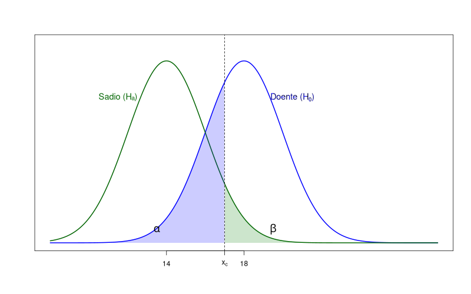

Suponha que a concentração de certa substância no sangue, entre pessoas sadias, siga um modelo normal com média de 14 unidades/mL e desvio padrão de 6 unidades/mL. Entre indivíduos acometidos por uma determinada doença, a concentração dessa substância também segue uma distribuição normal com o mesmo desvio padrão, mas com média igual a 18 unidades/mL.
Para verificar se um tratamento é eficaz contra essa doença, selecionou-se uma amostra aleatória \((X_1, \dots, X_{30})\) de indivíduos doentes submetidos ao tratamento, onde cada \(X_i \sim \mathcal{N}(\mu, 36)\), sendo \(\mu\) a média da concentração na população tratada.
A ideia é comparar a média amostral \(\widehat{\mu}\) com o valor 18: se \(\widehat{\mu}\) estiver próxima de 18, isso sugere que o tratamento não teve efeito, pois a média continua compatível com a população doente. Por outro lado, se \(\widehat{\mu}\) estiver significativamente abaixo de 18 (e mais próxima de 14), isso constitui uma evidência de que o tratamento foi eficaz.
Precisamos determinar o que significa estar "próximo" de 18 (ou de 14). Para isso, definimos um número chamado valor crítico, denotado por \(x_{c}\), tal que: se \(\widehat{\mu}_{\text{obs}} > x_{c}\), concluímos que \(\mu = 18\); e se \(\widehat{\mu}_{\text{obs}} \le x_{c}\), concluímos que \(\mu = 14\). Antes de determinarmos esse valor, é importante analisar os possíveis erros que podemos cometer ao tomar uma decisão com base em \(\widehat{\mu}_{\text{obs}}\).
Como \(\widehat{\mu}\) é uma variável aleatória, podemos cometer erros ao inferir que \(\mu = 14\) ou que \(\mu = 18\). Para entendermos esses possíveis erros, vamos chamar de hipótese nula, denotada por \(H_{0}\), a hipótese de que o tratamento não é eficaz, ou seja, \(\mu = 18\). A hipótese alternativa, denotada por \(H_{a}\), representa a hipótese de que o tratamento é eficaz, ou seja, \(\mu = 14\). Podemos escrever isso como:
Hipóteses formuladas dessa forma, sem desigualdades, são chamadas de hipóteses simples.
Já uma hipótese unilateral seria, por exemplo:
onde consideramos que o tratamento foi eficaz se a média populacional for menor do que 18.
Por outro lado, uma hipótese bilateral seria:
onde a hipótese alternativa considera que o tratamento produziu algum efeito — seja benéfico, se a média se aproximar de 14, ou danoso, se ela for ainda maior que 18.
Os dois erros que podem acontecer são
| Decisão | Situação | |
|---|---|---|
| H0 Verdadeira | H0 Falsa | |
| Rejeitar H0 | Erro Tipo I | Sem erro |
| Não rejeitar H0 | Sem erro | Erro Tipo II |
A situação ideal que tanto \(\alpha\), quanto \(\beta\) sejam próximos de zero, mas conforme observação da figura abaixo, quando uma aumenta, a outra diminui.
Assim, vamos controlar o erro tipo I, pois ele é mais importante. Chamamos de nível de significância do teste o valor de \(\alpha\).
Para hipóteses simples ou unilateral, dado \(\alpha\), temos que
Daí temos que
Por exemplo, se \(\alpha = 0,05\), então, pela tabela da normal padrão, \(z_{c} = -1,64\). Logo, \(x_{c} = 16,20\). O conjunto de todos os números menores do que \(x_{c}\) é dito região de rejeição:
Para hipótese bilateral a região de rejeição é dada por
onde \(x_{c_{1}}\) e \(x_{c_{2}}\) são dois valores críticos. Nesse caso, dado \(\alpha\), temos que
Dada a simetria da normal, temos que
Um estudante está curioso para saber se beber chá de camomila antes de dormir realmente afeta o tempo médio de sono das pessoas. Ele sabe, por experiências anteriores, que seus amigos geralmente dormem cerca de 7 horas por noite, com desvio padrão de 1 hora.
Para testar isso, ele convida 10 colegas a beberem chá de camomila antes de dormir durante uma semana e anota quantas horas cada um dormiu na primeira noite:
Ele quer saber se essa bebida altera significativamente o tempo médio de sono. Para isso, ele considerou as seguintes hipóteses:
Considerando \(\alpha = 0{,}06\), temos:
ou seja,
Pela tabela da normal, temos que \(z_{c_{1}} = -1{,}88\) e \(z_{c_{2}} = 1{,}88\). Assim,
ou seja, a região crítica, para \(\alpha = 0{,}06\), é:
Como \(\widehat{\mu}_{\text{obs}} = 7{,}1\) não pertence à região crítica, não rejeitamos a hipótese \(H_{0}\) ao nível de significância de 6%.